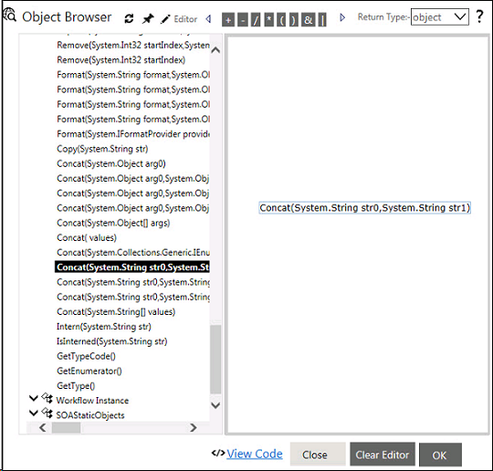
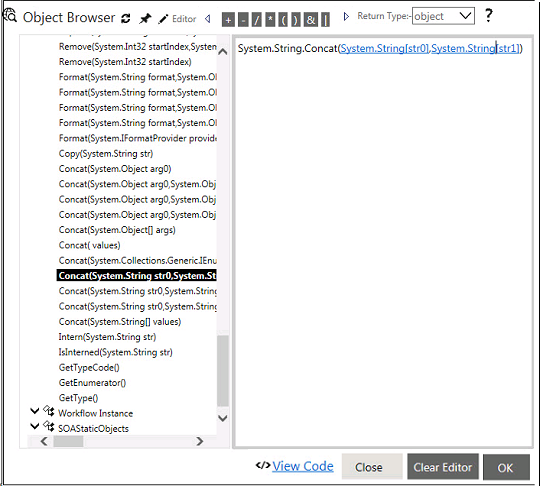
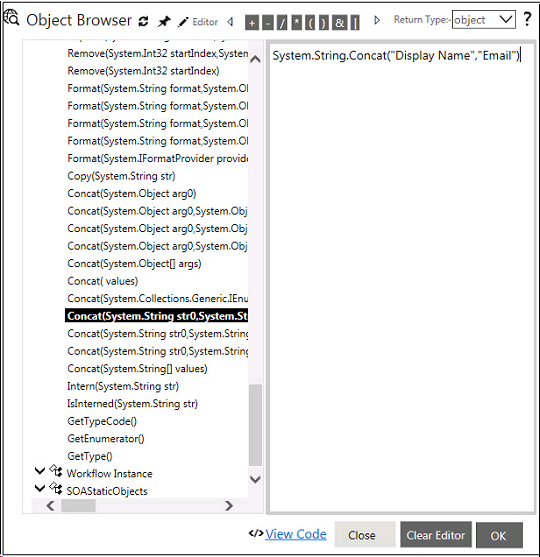
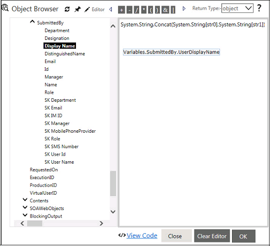
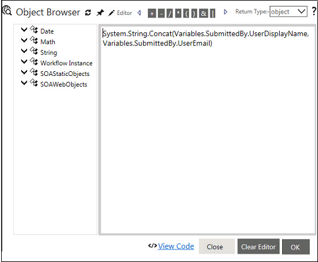
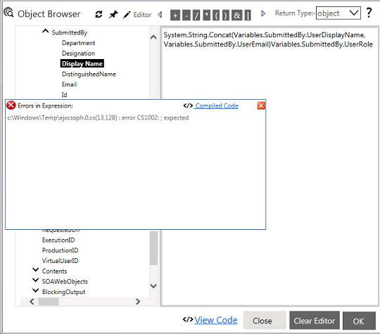
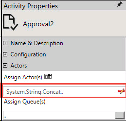

No
Building an expression
The following image shows how to drag and drop a method to the Editor:
:
The following image shows method dropped on the editor:

The following image shows how to replace method parameters by typing in text:

The following image shows how to replace method parameters by dragging and dropping Workflow Instance object nodes:

The following image shows how to replace method parameters by dragging and dropping:

Note: Copy-paste of variable texts from notepad will not parse the actual variable value as the referenced functions are not available. Referenced functions are available only in case of drag and drop of variable node, available from the left tree.
Debugging the expression
You can view the errors if any in an expression in the Error List and debug the expression. First, you need to click the OK button in the error message box to close it. You will find the Error List link at the bottom left of the Expression Editor window. You can move the mouse over this link to open the Error List shown below.

Expression added to the property
After the expression is completed without errors, it is added to the text box of the corresponding property in the Action Properties section. In the example shown below, the expression that was built in the previous steps is displayed as the value for the Action Display Name property. You can edit the expression by clicking on the Expression Editor icon. A "Clear Expression" icon will be displayed next to the expression. You can click on this icon to clear the expression in order to specify a different value.
The following image shows the saved expression displayed in the action properties:
